CMake 入门
前言
如果你是一个刚刚接触 C/C++ 编程的程序员，也许你会用类似于 VS 的集成开发环境写代码，一键编译运行；如果你开始学习 Linux 下的编程，也许你会开始使用 GCC 编译器在命令行中编译自己的代码；如果你开始编写一些稍微有些规模的项目，项目由若干个源文件和头文件组成，甚至可能用到其他的第三方库，也许你开始利用 Makefile 脚本来管理自己的项目，但是 Makefile 只能用于Linux环境下的开发，你的项目可能无法跨平台在Windows或者Mac上构建。而 CMake 就是一个跨平台的安装（编译）工具，可以用简单的语句来描述所有的安装(编译过程)， CMake 通过解析 CMakeLists.txt 文件来生成某个系统环境下的构建系统（比如 Linux 下的 makefile ，Windows 下的 VS 解决方案工程文件等），所以学习的关键就是学习怎么写 CMakeLists.txt。本文着重记录作为一名新手的 CMake 入门之路！！
工程环境
操作系统： Ubuntu 18.04
CMake版本： 3.19.7
工作目录：~/cmake_tutorial[注]：本文通过一步步构建一个可以计算阶乘的项目，逐步引入CMake中各种指令的常见用法，对于更高阶的用法，可以参考CMake官方文档。
[注]：代码github仓库
Tutorial 1：一个简单的项目 Factorial
首先我们在工作目录下建立一个 Tutorial1 目录用以存放我们这一小节的文件，进入该目录，然后在 Tutorial1 目录下编写一个 factorial.cpp 文件，其目标是生成一个可以求解 20 以内整数阶乘的程序，源代码如下：
1 | // factorial.cpp |
然后在和 factorial.cpp 文件同级的目录下创建一个文件 CMakeLists.txt ，键入如下内容：
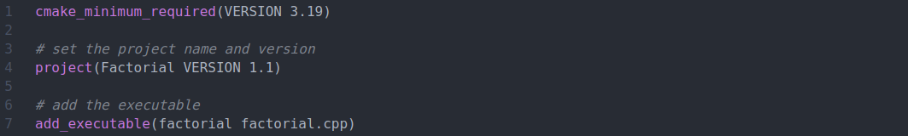
其内容仅仅由三句指令构成，cmake_minimum_required() 指令用以检查系统所用的 CMake 版本，若当前版本不满足要求的最小版本，则会停止处理且报错，同时该命令会将变量 CMAKE_MINIMUM_REQUIRED_VERSION 的值设置为最小版本号，通常来说，该命令一般写在整个 CMakeLists.txt 的开头；project() 指令用以给当前的项目设置项目名，同时还可以设置版本号，这些信息都会被存入到 CMake 的内置变量中；add_executable() 则是关键的用以创建目标程序的指令，在我们的例子中，我们希望通过源文件 factorial.cpp 生成目标程序 factorial 。到此为止，基本的代码文件都写好了，运行 CMake 则可以生成一个构建系统，在生成的过程中，CMake 可能会生成一系列的中间文件，因此，为了保持目录的清晰工整，我们在当前目录下创建一个 build 目录，将构建工作在该目录下进行，这也被称为源外构建（out-of-source）。
此时，我们当前目录下的文件列表如下：
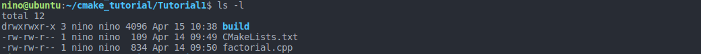
然后，我们运行如下命令来生成构建系统，同时构建项目。
1 | cd build |
其中，-S 和 ../ 选项代表源文件所在的目录，而 -B 和 ./ 选项代表构建目录。运行以上命令后查看 build 文件夹：
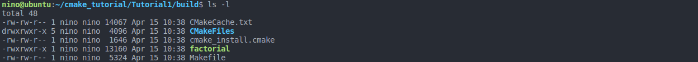
运行 cmake 命令后会生成几个中间文件（暂时不用关注其生成的中间文件），其中最重要的就是 Makefile 文件，根据该 Makefile 文件，运行 make 则可以生成目标程序 factorial。
Tutorial 2：为项目添加配置信息
首先我们在工作目录下建立一个 Tutorial2 目录用以存放我们这一小节的文件，进入该目录。一般在项目中，项目会有一些配置信息，不妨假设我们现在要在目标程序中输出我们项目的版本信息。根据惯例，项目的配置信息一般存放在一个特定的 Config 文件内，首先创建一个文件 factorialConfig.h.in ，输入以下代码：
1 |
然后在上一节的基础上将 CMakeLists.txt 修改为如下：
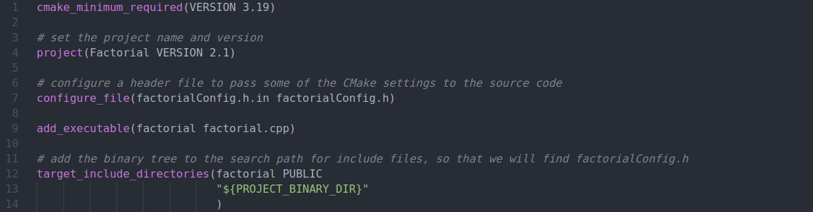
其中新增加了两条指令，configure_file() 指令用于生成文件，将第一个参数对应的文件内容复制到第二个参数对应的文件内，同时将对CMake中变量的引用替换为变量的值，通过该命令，会在构建目录下生成一个头文件 factorial.h，其中有两条宏定义指令，包含了文件的版本配置信息；target_include_directories() 指令用来指定特定目标 include 路径，由于生成的配置信息头文件在构建目录下，为了找到该头文件，则需要指定头文件的搜索路径，此处将项目的构建目录添加到头文件搜索路径中以找到 factorial.h 文件。其中 ${PROJECT_BINARY_DIR} 表示对变量的 PROJECT_BINARY_DIR 的使用， 该变量是一个 CMAKE 内置变量，对于变量引用的语法是 ${VAR}。
然后修改我们的源代码，用以输出版本信息：
1 | if (argc < 2) |
采用同样的方式使用 cmake 命令和 make 命令，生成可执行文件 factorial。有一个不同的点是，我们可以看到在 build 目录下，会有一个 .h 文件生成，该文件则由是 configure_file() 指令利用 factorial.h.in 所生成：
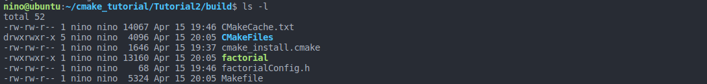
运行 factorial ，可以看到打印出了版本信息。
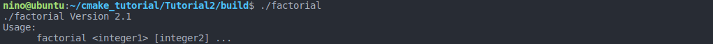
Tutorial 3：添加一个库
我们使用 long long 类型的变量来存放阶乘的结果，在当前机器上其仅仅占用 8 个字节，所以只能正确的计算 20 以内的阶乘，于是为了计算更大数字的阶乘，采用另外一种策略，编写了一个库文件来计算更大数字的阶乘。在当前的工作目录下创建 Tutorial3 目录，进入 Tutorial3 ，创建目录 ExtensibleFactorial 用来存放我们的计算阶乘的库文件。在该目录下有一个三个文件，分别是 MyFactorial.h，MyFactorial.cpp 和 CMakeLists.txt ，且通过 CMakeLists.txt 来生成库 ExtensibleFactorial ，该库可以用来计算大于 20 且小于 3249 的阶乘。CMakeLists.txt 内容仅仅包含一条指令：
add_library() 指令类似于 add_executable() 指令，其功能是生成库文件，第一个参数指定生成的库文件，我们此处指定生成库文件 ExtensibleFactorial ，第二个参数为库文件依赖的源文件，此处为 myFactorial.cpp 。
为了实现可选的使用我们的阶乘库，修改顶层的 CMakeLists 文件如下：
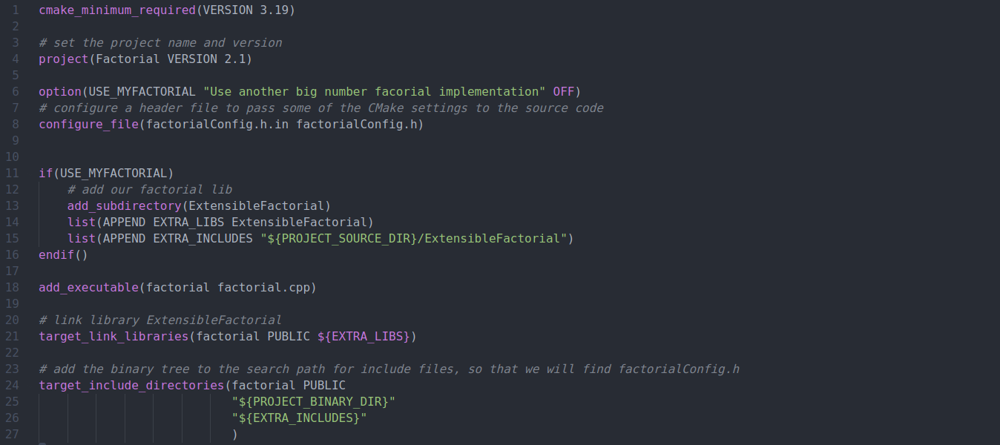
首先在第 6 行出现一个新的指令 option()，该指令用来添加一个 CMAKE 选项供用户选择，用户可以在运行 cmake 的时候通过 -D 来设置选项的值，此处添加一个选项 USE_MYFACTORIAL，并且将其默认初始化为 OFF，如果用户在运行 cmake 生成构建系统的时候未指定该选项的值，则将其默认设置为 OFF。在 11-16 行，一个 if() 语句通过选项 USE_MYFACTORIAL 来判定是否在程序中使用阶乘库，如果 USE_MYFACTORIAL 被置为 ON，则执行 if 内的语句块。add_subdirectory() 指令用来告诉 cmake 到指定的目录寻找 CMakeList.txt，并且解释它。该处则通过此指令来添加 ExtensibleFactorial 构建命令。由于我们使用的是库，所以在编译过后需要去链接它，target_link_libraries() 指令用来指定目标所需要链接的库的名称。
修改 factorial.cpp，来使用阶乘库。主要修改的代码如下：
1 | // line: 5-7 |
到此处，你一定很好奇在源码文件中宏 USE_MYFACTORIAL 是怎么来的，因为我们前面仅仅提到在 CMakeList 中定义并使用他，但这似乎和源文件没什么关系。奇妙之处就在于其实还有一处修改在配置文件中：
1 |
在配置文件中使用 #cmakedefine VAR 添加了一行代码，该处的代码的作用在官网文档的解释如下：
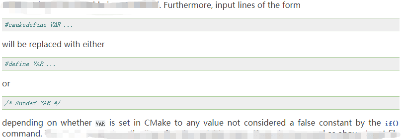
接下来，我们通过 cmake 来生成构建系统，并编译：
1 | mkdir build |
可以检查一下生成的配置信息头文件，果然生成了 #define USE_MYFACTORIAL
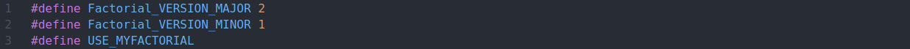
运行 factorial， 成功输出！！！！
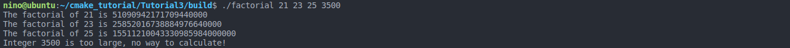
Tutorial 4：安装工程
在上述实践中，每次编译好工程，生成的可执行程序和库都在 build 文件夹内，但是我们希望可以把他们安装到指定的目录中，以便更方便的调用，接下来我们实验 CMake 的安装指令 install() ，通过该指令安装我们的工程。对于库 ExtensibleFactorial ，我们希望安装其静态库文件和头文件，对于目标程序，我们希望安装其可执行文件和相应的配置文件
首先为了安装库文件，在 ./ExtensibleFactorial/CMakeLists.txt 中的末尾添加如下指令：
为了安装可执行文件 factorial ， 在 ./CMakeLists.txt 中的末尾添加如下指令：
其中 install() 是为了给我们构建工具生成安装规则的指令，例如 make install 即通过 makefile 中的安装规则来安装工程，那么在 Linux 平台，install() 指令就会生成 makefile 的安装规则。该指令的 DESTINATION 选项则指定将目标安装到的目录，同时可以通过 CMAKE_INSTALL_PREFIX 该 cmake 变量来指定安装目录的前缀，其在 Linux 下的默认值是 /usr/local。
在当前的 Tutorial4 目录下创建一个 build 目录，用于生成构建系统；创建一个 dist 目录，用来存放待安装的文件。分别执行如下命令来完成生成、构建和安装的过程：
1 | cd build |
在本地测试的时候，输入以上命令的结果如下：
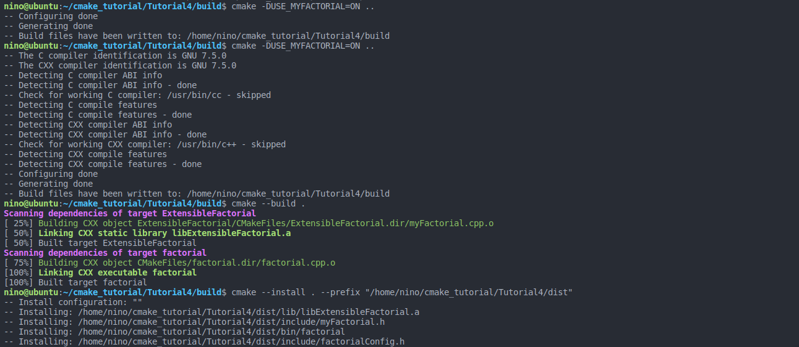
同时查看我们的安装目录：
一切正常，安装成功！
参考资料：CMake官方文档